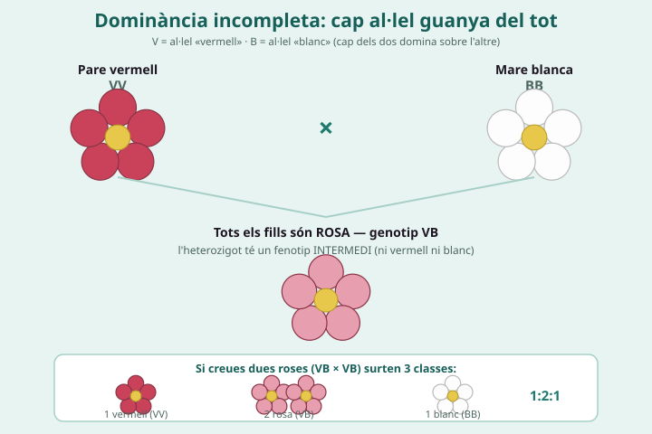
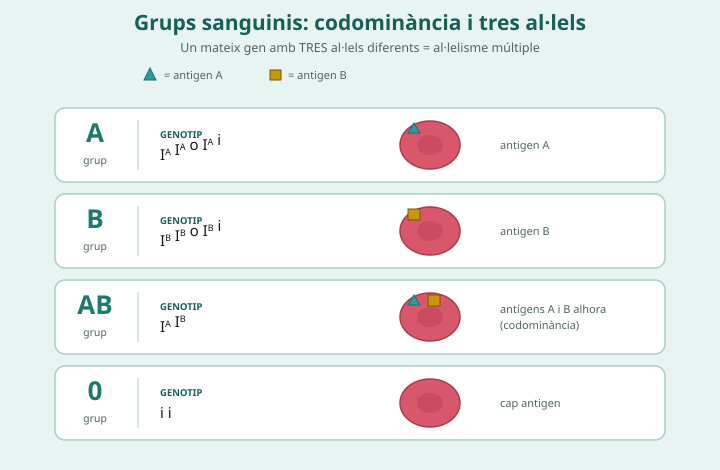
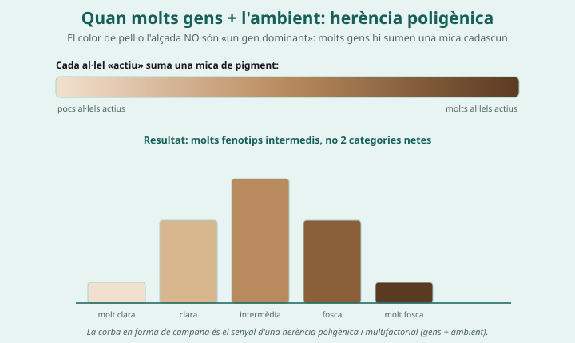

Si creues una flor vermella amb una de blanca, de quin color esperes els fills?
Pot sortir un color que no tingui cap dels dos pares?
Per què hi ha persones molt altes, molt baixes i de tantes alçades intermèdies, i no només «altes» o «baixes»?
Un viver obté flors roses creuant plantes vermelles i blanques. Mira l'heterozigot: s'assembla a un pare o és intermedi? Aquesta és la pista que revela el tipus d'herència.

V = al·lel vermell, B = al·lel blanc; l'heterozigot VB és rosa. VB × VB → 1:2:1.
Dominància incompleta = l'heterozigot és una barreja intermèdia (ni un pare ni l'altre).
Quin tipus d'herència és i com ho saps? (mira el color de l'heterozigot)
Omple el quadre del creuament VB × VB i compta les classes:
| Pare: V | Pare: B | |
|---|---|---|
| Mare: V | ||
| Mare: B |
Proporció de fenotips: (vermell : rosa : blanc)

Un gen amb tres al·lels (IA, IB, i). IA i IB són codominants entre ells i tots dos dominen sobre i.
Antigen = marca a la superfície del glòbul vermell que identifica el grup. Codominància = els dos trets es veuen ALHORA i sencers (grup AB); no és una mescla intermèdia (això és dominància incompleta).
Completa la taula dels grups sanguinis (genotips i què es veu):
| Grup | Genotip(s) | Què es veu |
|---|---|---|
| A | ||
| B | ||
| AB | ||
| 0 |
Cas: pare grup A × mare grup B. Tria un genotip per a cada pare, escriu els gàmetes a dalt i a l'esquerra i omple el quadre:
| gàmetes ↓ mare / → pare | ||
|---|---|---|
Grups sanguinis possibles dels fills (i per què):

Molts gens sumen una mica cadascun (poligènia) i l'ambient hi influeix (multifactorial): variació contínua en campana.
Per què l'alçada o el color de pell tenen molts valors intermedis i no només dues categories? Relaciona-ho amb «molts gens + ambient».
Classifica cada cas i indica la pista:
| Cas observat | Tipus d'herència | Pista que t'ho diu |
|---|---|---|
| Flors: vermell × blanc → tots rosa | ||
| Grup AB: es veuen antígens A i B alhora | ||
| Alçada: tots els valors intermedis | ||
| Sistema ABO: hi ha tres al·lels pel gen |
1. Creues una flor vermella (VV) amb una de blanca (BB) i TOTS els fills surten rosa. Si després creues dues d'aquestes flors rosa entre elles, en surten 1 vermella : 2 roses : 1 blanca. Quin tipus d'herència és? (marca)
☐ Codominància
☐ Al·lelisme múltiple
☐ Dominància simple
2. Una persona de grup AB té els antígens A i B alhora. Per què és codominància i NO dominància incompleta? Quina diferència hi ha amb la flor rosa?
3. Un pare de grup 0 i una mare de grup AB tenen fills. Quins grups poden tenir i quins NO? Fes-ho amb els genotips.